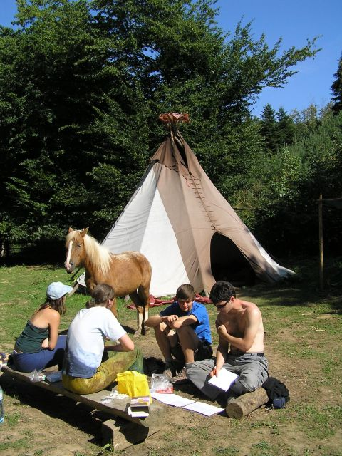
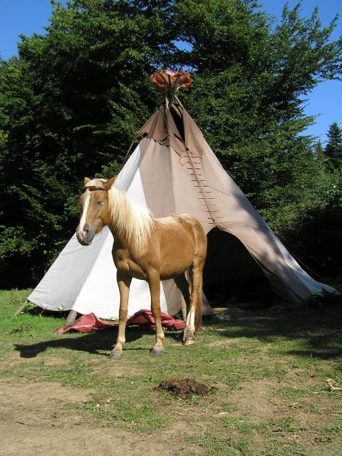
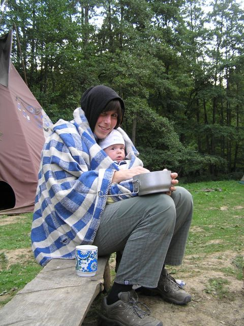
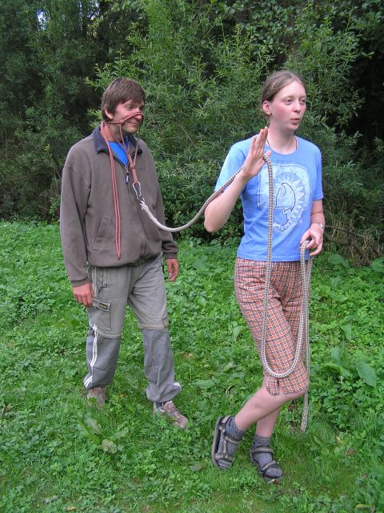
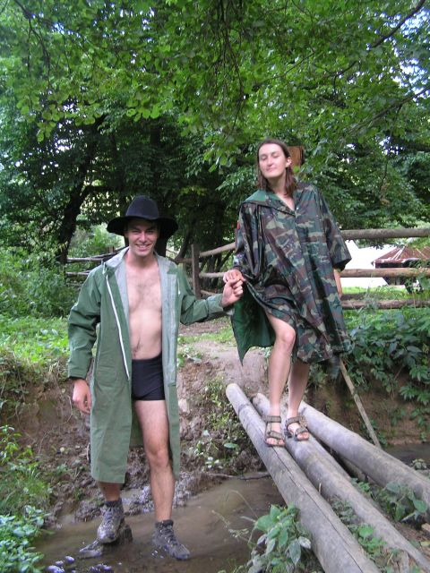

Kolekce Spirit Horse 2008
Pøipravili jsme pro Vás kolekci obleèení Spirit Horse. Kolekce obsahuje rùzné modely, které jsou urèeny zejména pro aktivní pobyt v pøírodì, pro veèerní posezení u táborákù èi pro nenároèný a pohodový program. Nìkteré modely obsahují doplòky pro pobyt v de¹tivém èi chladném poèasí.
Statické modely
Statický pohodový model. Model urèený pro statický program pøi slunném poèasí. Triko s krátkým rukávem, kra»asy, tøíètvr»áky, k¹iltovka, sluneèní brýle. Páskáèe, botasky, tenisky. Opalovací krém.

Statický model. Tento model ocení zejména konì ve velmi slunném poèasí.

Statický noèní model. Leòa s Lub¹ou pøedvádí obleèení pro noèní rozjímání u ohnì. Deka, nezbytný módní doplnìk leto¹ního léta, doká¾e na rozdíl od ohnì v noci zahøát i na zádech... Za pozornost stojí také aluminiový e¹us.
Dynamický model
Dynamický model. Obleèení pro dopolední a odpolední pobyt v pøírodì. Janka pøedvádí sportovní variantu -- krátké triko, tøíètvr»áky, pono¾ky, sandály. Peklùv model, dlouhé kalhoty a flisku, oceníte kromì sportovního vy¾ití v chladnìj¹ím poèasí také jako indoorovou variantu do veèerního tee-pee.

Dynamický vodní model. Plavky. Do vody. Do bláta. Testováno mlokem a Romanem.
Tì¾ce-dynamický model
Tì¾ce-dynamický model. Urèen pro aktivní pohyb za jakéhokoliv druhu poèasí. Pohory èi páskáèe chrání nohy pøed poranìním, plavky zaruèují dostatek volného pohybu. Proti vìtru a de¹ti ochrání plá¹tìnka èi ponèo. Jako doplnìk je mo¾né pou¾ít klobouk.
Obecná rada na závìr. Neexistuje ¹patné poèasí, existují pouze ¹patnì obleèení úèastníci! :-)